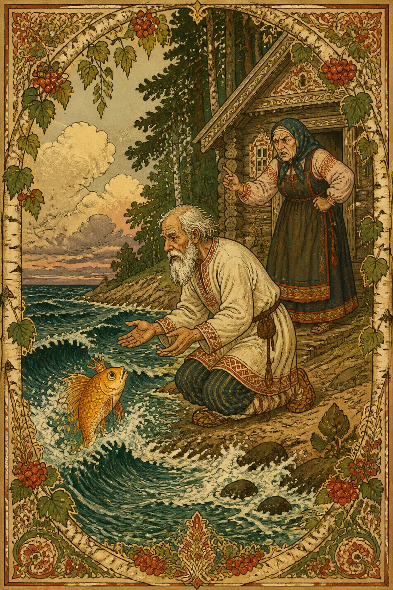

Русские авторские сказкиСлушать
Сказка о рыбаке и рыбке
Оценка отсутствует · Популярность: Очень высокая · Чтение: 7 мин чтения
Персонажи: Старик, Старуха +1
1 сказка
Русские авторские сказки на сайте «Сказки от Каму»: 1 сказка для чтения и прослушивания, с аудио, иллюстрациями и чтением онлайн.

Оценка отсутствует · Популярность: Очень высокая · Чтение: 7 мин чтения
Персонажи: Старик, Старуха +1